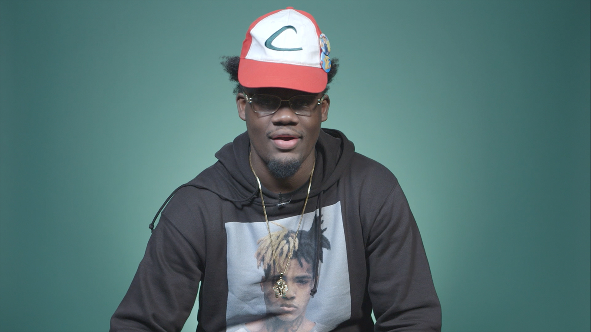

Ugly God

Ugly God is a Houston based rapper whose breakout single "Water" reached the Billboard Top 100.
His recent fame comes from his activity on an audio distribution platform called SoundCloud which allows free uploading and listening of original songs.
Although "Water" was his first chart topper, Ugly God has release many other singles that gained him a cult following.
His lyrics are often comical and different from the very popular southern trap style used by rappers today such as Migos and 21 Savage.
His mass appeal also stems from his relatable personality.
He has no association with gangster rap persona that many rappers portray. Rather than drugs and money, anime and videogames are his addictions.
This year, He is one of a few that is considered for XXL's 2017 freshman class,
his first studio album, The Booty Tape, is set to release sometime later this year.
This is just the start for the 18 year old rapper on what looks like a long and properous career.
